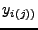

The expressions from the $PRED block will be evaluated for all of the data values in the file. But, only observation events (EVID = 0) will be associated with dependent variable (DV) values, i.e., with . If the data set does not contain an EVID column, then every event will be assumed to be an observation event.